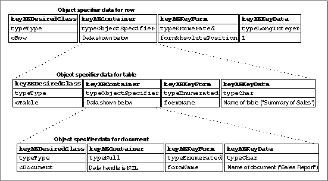

Legacy Document
Important: The information in this document is obsolete and should not be used for new development.
Important: The information in this document is obsolete and should not be used for new development.


Container
The container for the requested objects is usually the object in which they are located. It can be identified in one of four ways:
Keyword Descriptor type Data keyAEContainer typeObjectSpecifier Object specifier record. typeNull Value of data handle is NIL. Specifies the default container at the top of the container hierarchy.typeObjectBeingExamined Value of data handle is NIL. Specifies the container for elements that are tested one at a time; used only within key data for key formformTest.typeCurrentContainer Value of data handle is NIL. Specifies a container for an element that demarcates one boundary in a range. Used only within key data for key formformRange.The data that describes a container usually consists of another object specifier record. The ability to nest one object specifier record within another in this way makes it possible to identify a chain of containers that fully describes the location of one or more Apple event objects.
For example, Figure 6-2 shows nested object specifier records that specify the first row of a table named "Summary of Sales" in a document named "Sales Report." The container specified by the object specifier record at the bottom of the figure describes the outermost container in the container hierarchy--the container for the document "Sales Report."
Because a container must be specified for each Apple event object in a container hierarchy, a null descriptor record (that is, a descriptor record whose descriptor type is
typeNulland whose data handle has the valueNIL) is used to specify the application's default container--the outermost container for any container hierarchy in that application.Figure 6-2 Nested object specifier records that specify a container hierarchy

The object specifier data at the bottom of Figure 6-2 uses a null descriptor record to specify the document's container--that is, the default container for the application. The object specifier record for the document identifies the document named "Sales Report"; the object specifier record for the table identifies the table named "Summary of Sales" in the document "Sales Report"; and the object specifier record for the row identifies the first row of the table named "Summary of Sales" in the document "Sales Report."
- Note
- The format used in Figure 6-2 and similar figures throughout this chapter does not show the structure of the nested object specifier records as they exist within an Apple event. Instead, these figures show what you would obtain after calling
AEGetKeyDescrepeatedly to extract the object specifier records from an Apple event record.
- When you call
AEGetKeyDescto extract a null descriptor record, the function returns a descriptor record of typeAEDescwith a descriptor type oftypeNulland a data handle whose value is 0.An object specifier record in an Apple event parameter almost always includes nested object specifier records that specify the container hierarchy for the requested Apple event object. For the nested object specifier records shown in Figure 6-2, the relationship between each Apple event object and its container is always simple containment: it is located inside its container.
In other cases, the specified container may not actually contain the requested Apple event object. Instead, the relationship between a "container" and a specified object can be defined differently, depending on the key form. For example, the key form
formRelativePositionindicates that the requested object is before or after its container.Object specifier records that specify the key form
formTestorformRangerequire key data that consists of several nested descriptor records, including additional object specifier records that identify either a group of elements to be tested or the boundary elements that demarcate a range. These object specifier records use two special descriptor types to specify containers:typeObjectBeingExamined(see page 6-22), which specifies a container that changes as a group of elements are tested one at a time, andtypeCurrentContainer(see page 6-23), which specifies the container for a boundary element in a range. Both of these descriptor types require a data handle whose value isNIL, since they act much like variables whose value is supplied by the Apple Event Manager according to other information provided in the container hierarchy.